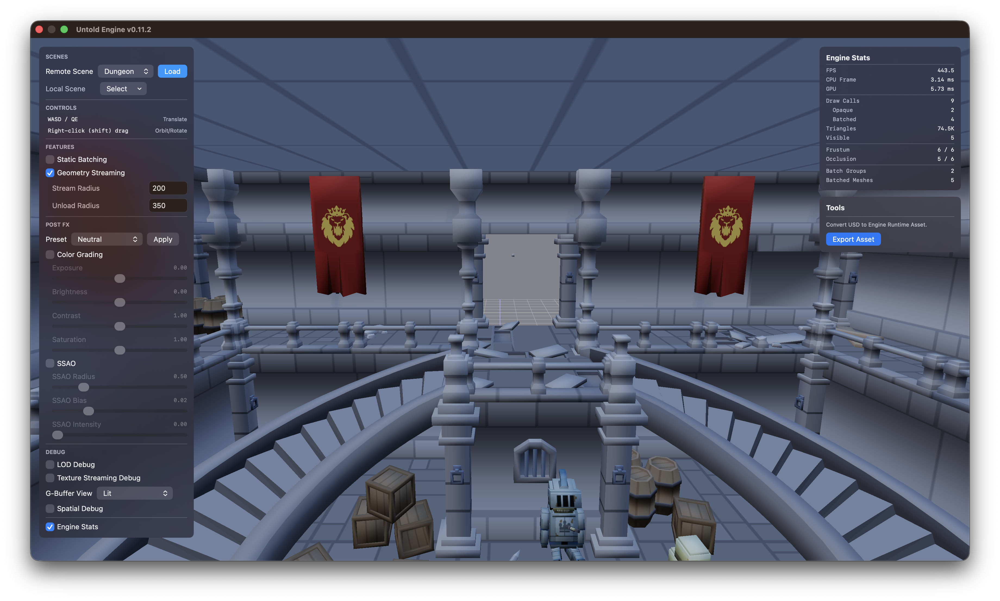
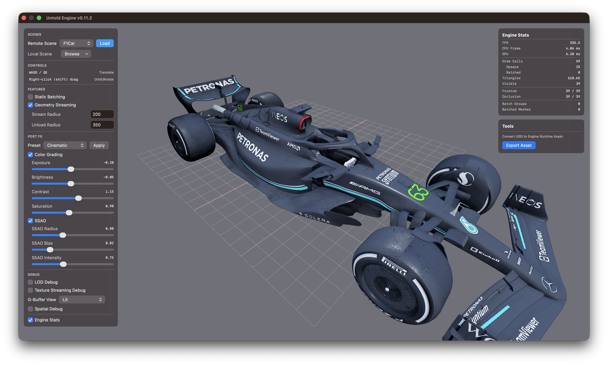
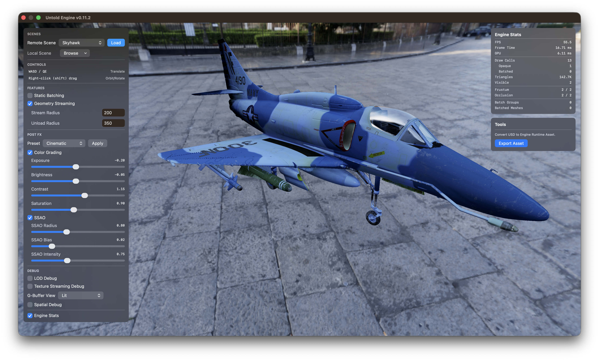

Untold Engine
Untold Engine is a Swift + Metal 3D engine for macOS, iOS, and visionOS — with native Apple Vision Pro support and a growing focus on spatial computing — built for developers who:
- Want full control over rendering and systems
- Prefer working directly with Swift + Metal
- Are building XR, 3D, or visualization applications
- Need to handle large scenes, streaming data, or custom pipelines
If you've hit the ceiling of what existing engines allow on Apple platforms, this is for you.

Creator & Lead Developer:
http://www.haroldserrano.com
Watch It in Action — Apple Vision Pro Demos
 |
 |
 |
 |
 |
Try the Engine Right Now
The fastest way to experience Untold Engine is to run the demo project.
Clone the repository and launch the demo:
The demo UI lets you see the engine in action right away. Using the Remote Scene drop-down menu, you can choose a scene to stream directly into the demo through the engine's Asset Remote Streaming support.

I want to try my own USDZ
Untold Engine uses its own native asset format: .untold.
To try your own USDZ file, first convert it to .untold using the Tools section in the demo UI.
After the export is complete, open the Local Scene Browse drop-down menu, choose .untold, then browse for and select your exported .untold file.
Note: The exporter requires Blender.

Getting Started
To create your own project using the Untold Engine, see Getting Started.
Core Direction
Untold Engine is built around three focused goals:
-
Spatial Engine First — Designed for spatial computing applications. LOD, geometry streaming, and static batching exist to support large, real-world-scale environments where presence and performance both matter.
-
XR / visionOS Support — Spatial input, AR workflows, and Vision Pro support are functional today and expanding with each release.
-
Metal-First Architecture — The rendering layer stays close to Metal to maintain performance and control, without abstraction layers getting in the way.
Example Use Cases
Untold Engine is well-suited for:
- XR applications (Vision Pro, ARKit-based apps)
- Large-scale scene visualization (cities, archviz, datasets)
- Custom rendering pipelines and experiments
- Simulation tools and interactive 3D systems
Current Features
- Apple Platform Coverage — Unified Swift + Metal codebase for macOS, iOS, and visionOS
- Rendering Pipeline — Metal renderer with PBR/IBL workflows and post-processing across standard and XR paths
- AR and XR Runtime Support — Built-in AR workflows plus visionOS integration and spatial interaction support
- ECS + Scene Graph Core — Component-based architecture with hierarchical transforms and scene root transform controls
- Async Content Loading — Asynchronous loading pipeline for scenes and assets to improve responsiveness on large worlds
- LOD and Streaming — LOD support with geometry streaming, streaming regions, and memory budget management
- Static Batching and Culling — Static batching, octree acceleration, and occlusion culling for large-scene performance
- Advanced Picking — Scene, ground, and GPU ray picking with octree-backed intersection paths
- Spatial Input Features — XR spatial input helpers including anchored pinch drag, distance tracking, and two-hand rotation
- Scripting System (USC) — Untold Script Core with multi-script support plus camera, math, and physics APIs (Experimental)
- Gameplay Systems — Physics, animation, camera waypoint, and input systems (keyboard, mouse, touch, and gamepad)
- Gaussian Splat Rendering — Native Metal support for rendering and compositing 3D Gaussian content
- Tooling Integration — Optional Untold Editor workflow and Swift Package Manager integration
Roadmap
See open issues for planned features and known improvements.
Contributing
Contributions are welcome — whether that's fixing bugs, improving systems, writing documentation, or proposing ideas.
Before submitting a pull request, please review the Contributing Guidelines.
All contributions are licensed under MPL-2.0.
GitHub Sponsors
A huge thanks to the people helping shape the Untold Engine.
License
Untold Engine is licensed under the Mozilla Public License 2.0 (MPL-2.0).
This allows developers to build commercial applications while ensuring improvements to the engine itself remain open.
| Use Case | Allowed | Obligation |
|---|---|---|
| Build games | Yes | Game code can remain proprietary |
| Commercial apps | Yes | No royalties |
| Modify engine | Yes | Modified engine files remain MPL |
| Create plugins | Yes | Any license allowed |
Full license: https://www.mozilla.org/MPL/2.0/
Questions & Discussions
- GitHub Discussions — ideas and questions
- GitHub Issues — bugs and tasks
- Ask a Question